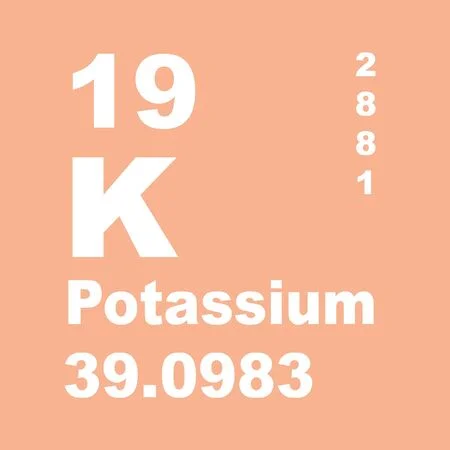
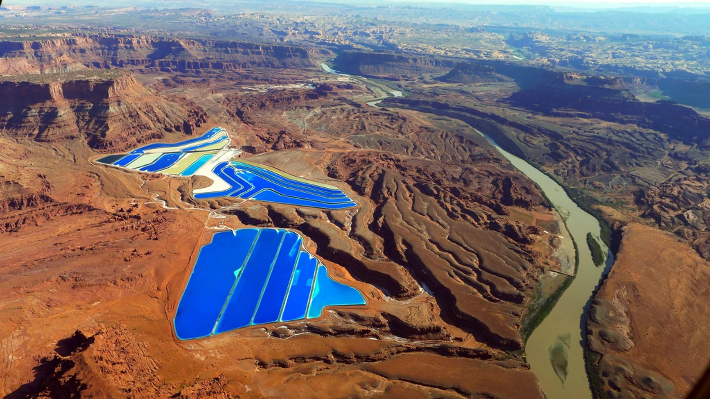

Potassium (K)
Potassium is a alkali metal, which means it's a very reactive in it's elemental state, it has a melting point of 63.5°C. Elmental potassium is silvery white and shiny and is reacts explosively to water or even the environment.
Reaction
Here is a reaction of a piece of elemental potassium put in water, which creates an explosive reaction.
Interesting Facts
- The image above shows potash evaporation ponds, these evaporation ponds contain potash which is potassium in rock salts. The way they make these ponds is quite interesting first they pump water deep udnerground to where the potash deposits are and then the water dissolves the potash. The dissolved potash then is pumped up top into the evaporation ponds and when all the water is gone you are left with potash.
- The recipe to make potash is almost 1500 years old, it's made from wood ash mixed in water than evaporated in a pot, which is where it gets it name from.
- Elemental potassium was discovered after potash in 1807 by Hmphry Davy. He discovered it by using damp potash and connected it to battery which created tiny metal rocks that when interaction with the environment made an explosive reaction, which was potassium.
- Potash was first used to be mined manually, but mining it deep underground made it very dangerous. Since potash contains salt which attracts oil and gas which means that when potash is mined gases are released in the mines which makes the mines extremely flamable because the air is trapped. In 1963 the exact thing happened in a potash mine where a pocket of gas was released and then a huge explosion happened killing 18 men.
- Potassium is used in many different things like fireworks, soap, and as fertilizer. If the world suddenly lost supply of potassium half of the worlds population would starve because potassium is found in many of the foods we eat. Potassium is and will continue to be a very important element because of it's what allowed us to create the modern world, freeing many people from farming to do other things like being a doctor or a scientists, which lead to new innovations.
Sources
These Pools Help Support Half The People On EarthPotassium in Water (reaction only)